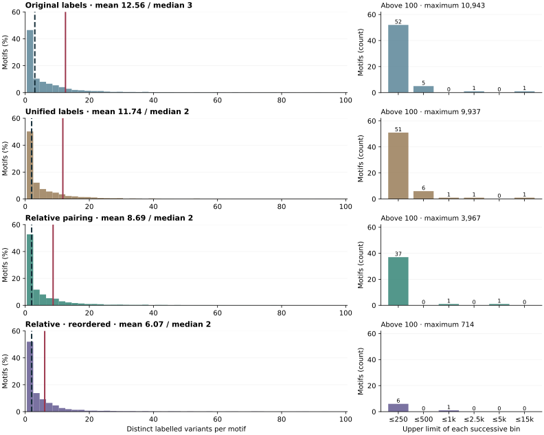

One fragment, one token
Three ways to encode cross-fragment connections on 50,000 ChEMBL 35 molecules. Relative pairing uses 30.42% fewer vocabulary entries than original SAFE labels.
Vocabulary and recovery
| Connection scheme | Vocabulary entries | Mean tokens | Median tokens | Strict molecule recovery | Exact original SAFE text |
|---|
The cohort contains the first 50,000 valid, unique molecules with fewer than 100 lexical items in their original SMILES. NPE was trained on this cohort with 3,000 node entries. Each final SAFE fragment occupies one model position. Dots are inserted during decoding.
Numbering rules, boundaries and validation
Original labels retain the complete fragment text. Unified labels assign the smallest available positive label to each cross-fragment opening, reusing released labels and reserving all internal ring labels. Relative pairing records openings and the one-based rank of the pending site to close. The two latter schemes decode to the same renumbered SAFE string.
45,402 molecules preserved the NPE partition exactly, 4,592 had boundaries adjusted by SAFE, and 6 fell back to whole-molecule SMILES. All three dictionaries were built on this cohort; coverage on unseen molecules was not measured. Saved token IDs and their dictionary were decoded without a per-molecule edge table. Strict recovery compares canonical isomeric SMILES.
How many variants does each motif have?
Each of the 4,817 distinct fragment backbones observed with a cross-fragment label contributes once. Backbones are grouped from final SAFE fragments, including adjusted boundaries. Counts include only variants with an external connection.
Mean Median

| Scheme | Mean variants per motif | Median | Maximum |
|---|
Token length distribution across 50,000 molecules
All three schemes use the same fragment boundaries. Their token lengths match for every molecule: 314,965 tokens in total.

Decode a relative-pairing sequence
Choose a molecule, then click a token. Gold marks the atoms in that token. A red line marks a cross-fragment bond completed in the selected step. Atom indices follow SAFE order, starting at 0.
Original SAFE
How to read a token
{+} opens a connection at the current atom. {-2} closes the second site in the current pending list and removes it. Within one token, actions run from left to right. Bond symbols such as = keep their usual meaning; ring labels that pair within the fragment stay literal. The molecular drawings illustrate the replay; decoding the SAFE sequence uses only token IDs and dictionary entries.